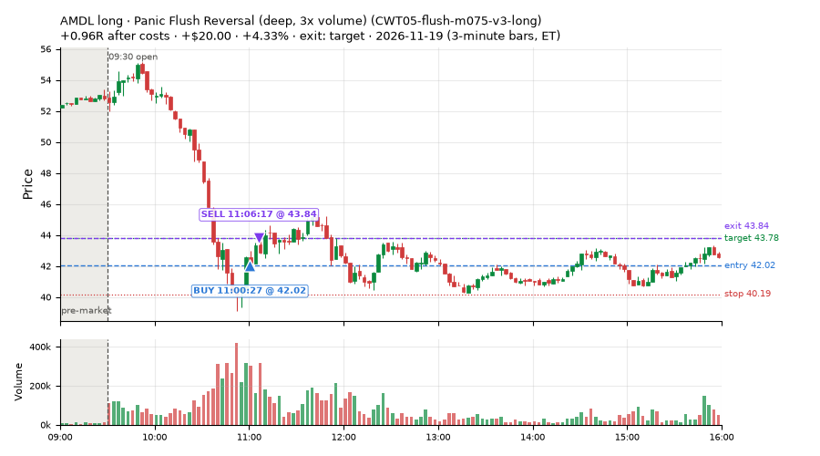
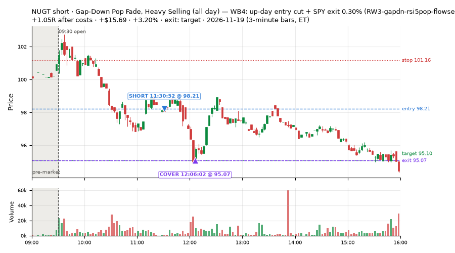
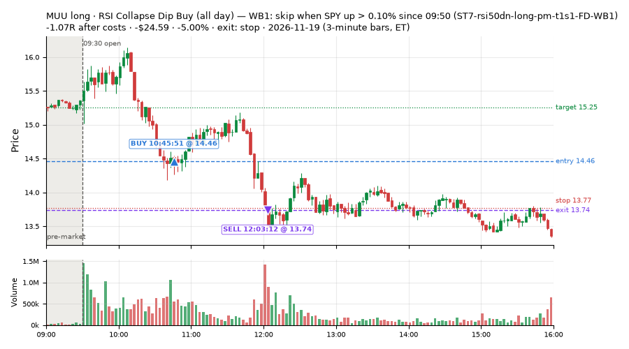
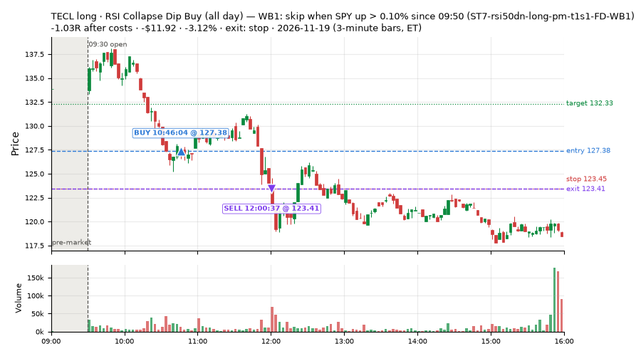
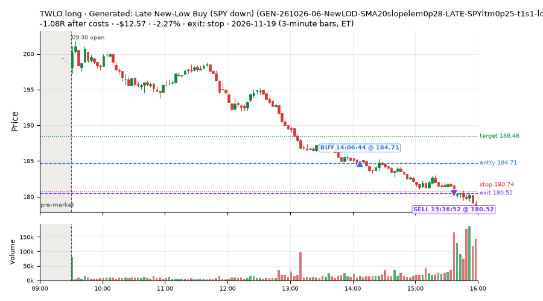
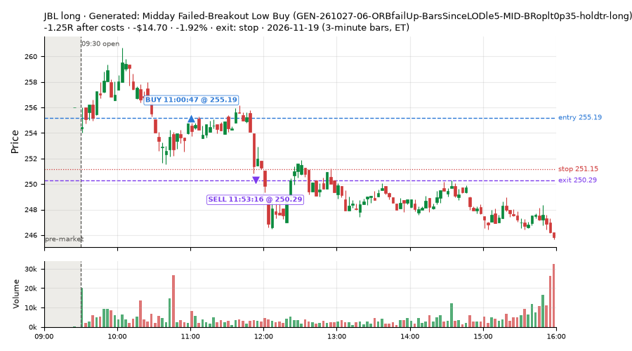
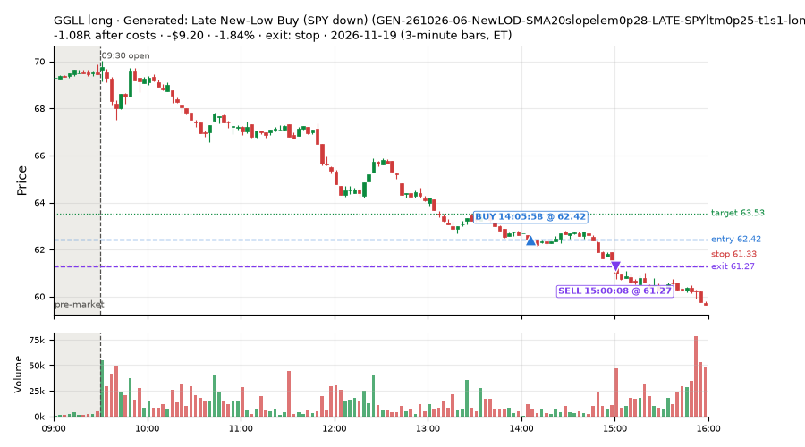

62 trades · win rate 44% · P/L $-47.26
PROBATION: no live setup has passed both locked test periods. 10 owner-directed setups added 2026-10-08 (MarcoFlow top 5 + 5 new), untested live. RW6G1 (RW6 + VWAP band guard) added 2026-10-09, probation.

| Symbol | Setup | Side | In | Out | Entry | Exit | Exit reason | % gained | P/L |
|---|---|---|---|---|---|---|---|---|---|
| AMDL | Panic Flush Reversal (deep, 3x volume) (CWT05-flush-m075-v3-long) | long | 11:00 | 11:06 | 42.02 | 43.84 | target | +4.33% | $20.00 |
| SLS | Generated: Late New-Low Buy (SPY down) (GEN-261026-06-NewLOD-SMA20slopelem0p28-LATE-SPYltm0p25-t1s1-long) | long | 14:52 | 15:36 | 14.29 | 14.87 | target | +4.04% | $20.21 |
| NUGT | Gap-Down Pop Fade, Heavy Selling (all day) — WB4: up-day entry cut + SPY exit 0.30% (RW3-gapdn-rsi5pop-flowsell-short-FD-WB4) | short | 11:30 | 12:06 | 98.21 | 95.07 | target | +3.20% | $15.69 |
| Symbol | Setup | Side | In | Out | Entry | Exit | Exit reason | % lost | P/L |
|---|---|---|---|---|---|---|---|---|---|
| MUU | ST7-rsi50dn-long-pm-t1s1-FD-WB1 | long | 10:45 | 12:03 | 14.46 | 13.74 | stop | -5.00% | $-24.59 |
| TECL | ST7-rsi50dn-long-pm-t1s1-FD-WB1 | long | 10:46 | 12:00 | 127.38 | 123.41 | stop | -3.12% | $-11.92 |
| TWLO | GEN-261026-06-NewLOD-SMA20slopelem0p28-LATE-SPYltm0p25-t1s1-long | long | 14:06 | 15:36 | 184.71 | 180.52 | stop | -2.27% | $-12.57 |
| JBL | GEN-261027-06-ORBfailUp-BarsSinceLODle5-MID-BRoplt0p35-holdtr-long | long | 11:00 | 11:53 | 255.19 | 250.29 | stop | -1.92% | $-14.70 |
| GGLL | GEN-261026-06-NewLOD-SMA20slopelem0p28-LATE-SPYltm0p25-t1s1-long | long | 14:05 | 15:00 | 62.42 | 61.27 | stop | -1.84% | $-9.20 |







Signal to fill: median 2s, 90th percentile 3s (62 trades). Bars close each minute; the order follows the bar close.
Best excursion (MFE): median 0.51R; worst (MAE) median 0.61R. 21% of trades never got +0.25R in our favour; 3 reached +1R and still closed at or below 0.
| Symbol | Setup | Best R | Worst R | Closed R |
|---|---|---|---|---|
| FTEC | ST7-rsi50dn-long-pm-t1s1-FD-WB1 | +1.11 | -1.08 | -1.16 |
| SMH | ST7-rsi50dn-long-pm-t1s1-FD-WB1 | +1.05 | -1.09 | -1.12 |
| MUU | ST7-rsi50dn-long-pm-t1s1-FD-WB1 | +1.04 | -1.15 | -1.07 |
| TECL | ST7-rsi50dn-long-pm-t1s1-FD-WB1 | +0.99 | -1.05 | -1.03 |
| SQQQ | NM-PM-gapdn-above-pdh-rvol-short | +0.88 | -1.00 | -1.00 |
| Entry time | Trades | Win | Avg R | P/L |
|---|---|---|---|---|
| 09:50-10:30 | 2 | 100% | +0.94 | $17.49 |
| 10:30-11:30 | 23 | 35% | -0.44 | $-70.66 |
| 11:30-13:00 | 11 | 73% | +0.24 | $36.13 |
| 13:00-14:00 | 3 | 33% | -0.10 | $3.79 |
| 14:00-16:00 | 23 | 35% | -0.25 | $-34.01 |
| Setup | Trades | Win | Avg R after costs | Adj R (net of SPY) | Avg R ex-market (all sessions) | P/L |
|---|---|---|---|---|---|---|
| Panic Flush Reversal (deep, 3x volume) (CWT05-flush-m075-v3-long) | 1.0 | 100% | +0.96 | +0.95 | -0.15 (beta +1.20, n 13) | $20.00 |
| Generated: Open First-Dip Short (extended) (GEN-261022-04-RSI2le0-Eff6ge0p83-SMA20dge0p59-OPEN-BRvwlt0p5-t1s1-short) | 2.0 | 100% | +0.94 | +0.48 | – | $17.49 |
| Generated: Late New-Low Buy (SPY down) (GEN-261026-06-NewLOD-SMA20slopelem0p28-LATE-SPYltm0p25-t1s1-long) | 15.0 | 27% | -0.29 | -0.09 | -0.14 (beta +0.81, n 39) | $-24.71 |
| Generated: Midday Failed-Breakout Low Buy (GEN-261027-06-ORBfailUp-BarsSinceLODle5-MID-BRoplt0p35-holdtr-long) | 11.0 | 18% | -0.71 | +0.05 | -0.33 (beta +0.44, n 40) | $-43.44 |
| Generated: Late-AM Gap-Up Failed-Break Short (GEN-261027-09-ORBfailDn-Gapge2-Slope6ge0p03-LAM-BRvwlt0p5-t05s05-short) | 8.0 | 88% | +0.42 | +0.19 | -0.08 (beta -2.13, n 14) | $23.00 |
| Generated: Late Upper-Wick Short (SPY down) (GEN-261029-07-UpWickge0p59-DayRngVsPrevle0p42-LATE-SPYltm0p5-t05s1-short) | 6.0 | 50% | -0.08 | -0.68 | +0.12 (beta -0.04, n 35) | $-2.49 |
| Gap-Down Rebound Overbought Short (all day) — WB5: first entry per name-day (no refire) (L3-gap-slope-rsi5hi-FD-WB5) | 2.0 | 0% | -1.03 | -1.22 | – | $-11.85 |
| Gap-Down Reclaim Fade, Afternoon (near-miss) (NM-PM-gapdn-above-pdh-rvol-short) | 1.0 | 0% | -1.00 | -1.26 | – | $-7.39 |
| Gap-Down Pop Fade, Heavy Selling (all day) — WB4: up-day entry cut + SPY exit 0.30% (RW3-gapdn-rsi5pop-flowsell-short-FD-WB4) | 6.0 | 67% | +0.42 | -0.07 | -0.10 (beta -1.01, n 17) | $29.92 |
| Big Gainer SMA50 Cross Fade (all day) (RW6-ns2-up3-short-FD) | 1.0 | 100% | +0.45 | +0.57 | -0.14 (beta -0.53, n 10) | $6.13 |
| Gap-Up Faller Bounce Short (all day) (ST3-rsi5up-short-pm-t1s1-FD) | 1.0 | 100% | +0.03 | -0.28 | -0.06 (beta -1.27, n 19) | $0.58 |
| Prior-Day-High Break Fade (all day) (ST5-pdbrkup-short-mid-t05s1-FD) | 2.0 | 100% | +0.64 | +0.43 | -0.17 (beta -1.08, n 9) | $14.70 |
| RSI Collapse Dip Buy (all day) — WB1: skip when SPY up > 0.10% since 09:50 (ST7-rsi50dn-long-pm-t1s1-FD-WB1) | 6.0 | 0% | -1.09 | -0.48 | -0.92 (beta +0.19, n 8) | $-69.20 |
Market direction (SPY, beta 1) accounted for $-31.46 of today's $-47.26; the rest ($-15.80) came from the setups themselves. Avg R net of SPY: -0.12 (incl. a hedge leg's cost; report only).
25 setups live today. Today: 184 signals, 62 taken, 3 lost because another setup held the symbol (2%). Since 2026-11-05 (11 sessions): 758 signals, 334 taken, 6 lost to other setups (1%). Peak open positions today 25 of 400 slots. Earnings blackout removed 209 symbols before scanning.
Simulated playing time (not live): 423 what-if trades of signals not taken, avg -0.11R, 49% winners; of them 6 lost to another setup (avg +0.32R).
Silent: GEN-261019-06-VWAPxUp-EMAdiffge0p29-PM-SPYgt0p5-holdtr-long, GEN-261026-10-ORBfailDn-EMAdChglem0p051-PM-BRopgt0p65-t1s1-long, IDX3-spy075-0955-3x-trail, LD5-st2-breadthup-t05s1-long, NM-RWN4-ns2-spyup05-notfri-short
| Prio | Setup | Today sig / taken | Sessions | Signals / taken / trades | Taken/day | Expected/day | Lost to other setups | Lost to (setup n) | Top skip reasons | SIMULATED: not-taken n / avg R / win | Verdict |
|---|---|---|---|---|---|---|---|---|---|---|---|
| 1 | Gap-Down Pop Fade, Heavy Selling (all day) — WB4: up-day entry cut + SPY exit 0.30% RW3-gapdn-rsi5pop-flowsell-short-FD-WB4 | 13 / 6 | 3 | 33 / 17 / 17 | 5.67 | – | 0 | – | spread / quote / size 11, other 4, not shortable / shorts off 1 | 16 / +0.09R / 56% | ok 28.3 entries/week |
| 2 | Gap-Down Rebound Overbought Short (all day) — WB5: first entry per name-day (no refire) L3-gap-slope-rsi5hi-FD-WB5 | 42 / 2 | 1 | 42 / 2 / 2 | 2.00 | – | 0 | – | not shortable / shorts off 39, spread / quote / size 1 | 40 / -0.67R / 30% | slow 10.0 entries/week; ~6 weeks to 60 trades |
| 3 | RSI Collapse Dip Buy (all day) — WB1: skip when SPY up > 0.10% since 09:50 ST7-rsi50dn-long-pm-t1s1-FD-WB1 | 8 / 6 | 3 | 12 / 8 / 8 | 2.67 | – | 0 | – | spread / quote / size 3, other 1 | 4 / -0.58R / 25% | slow 13.3 entries/week; ~4 weeks to 60 trades |
| 4 | 20-Minute Opening Range Breakout — WB3: top 10 in play + price >= $20 orb20_a-WB3 | 0 / 0 | 3 | 3 / 2 / 2 | 0.67 | – | 0 | – | spread / quote / size 1 | 1 / -1.14R / 0% | slow 3.3 entries/week; ~18 weeks to 60 trades |
| 5 | Index Dip Bounce 1 TQQQ IDX1-qqq100-0955-TQQQ-trail | 0 / 0 | 11 | 1 / 1 / 1 | 0.09 | – | 0 | – | – | 0 / – | slow 0.5 entries/week; ~132 weeks to 60 trades |
| 6 | * SPY Dip of 0.2 ATR, Breadth Turn (SPXL, trailing) (near-miss) LD6-spy-dip020atr-breadthturn-spxl-holdtr-long | 0 / 0 | 11 | 1 / 1 / 1 | 0.09 | – | 0 | – | – | 0 / – | slow 0.5 entries/week; ~132 weeks to 60 trades |
| 7 | * Oversold Pop after an SPY Dip-Turn (trailing) (near-miss) LD7-ns1-idxturn-holdtr-long | 2 / 0 | 11 | 8 / 4 / 4 | 0.36 | – | 0 | – | spread / quote / size 2, price through stop/target 1, other 1 | 4 / +0.01R / 25% | slow 1.8 entries/week; ~33 weeks to 60 trades |
| 8 | Gap-Down Reclaim Fade, Afternoon (near-miss) NM-PM-gapdn-above-pdh-rvol-short | 4 / 1 | 11 | 5 / 1 / 1 | 0.09 | – | 0 | – | not shortable / shorts off 2, spread / quote / size 1, other 1 | 4 / -0.54R / 25% | slow 0.5 entries/week; ~132 weeks to 60 trades |
| 9 | Generated: Late Upper-Wick Short (SPY down) GEN-261029-07-UpWickge0p59-DayRngVsPrevle0p42-LATE-SPYltm0p5-t05s1-short | 8 / 6 | 4 | 41 / 35 / 35 | 8.75 | – | 0 | – | other 6 | 6 / +0.35R / 100% | ok 43.8 entries/week |
| 10 | Generated: Late New-Low Buy (SPY down) GEN-261026-06-NewLOD-SMA20slopelem0p28-LATE-SPYltm0p25-t1s1-long | 21 / 15 | 4 | 53 / 39 / 39 | 9.75 | – | 0 | – | other 8, spread / quote / size 6 | 14 / -0.03R / 43% | ok 48.8 entries/week |
| 11 | Generated: PM VWAP Reclaim Buy (SPY up) GEN-261019-06-VWAPxUp-EMAdiffge0p29-PM-SPYgt0p5-holdtr-long | 0 / 0 | 4 | 0 / 0 / 0 | 0.00 | – | 0 | – | – | 0 / – | silent no signals in 4 session(s); no expected rate on file |
| 12 | Generated: PM Failed-Breakdown Buy GEN-261026-10-ORBfailDn-EMAdChglem0p051-PM-BRopgt0p65-t1s1-long | 0 / 0 | 4 | 0 / 0 / 0 | 0.00 | – | 0 | – | – | 0 / – | silent no signals in 4 session(s); no expected rate on file |
| 13 | Generated: Midday Failed-Breakout Low Buy GEN-261027-06-ORBfailUp-BarsSinceLODle5-MID-BRoplt0p35-holdtr-long | 32 / 11 | 4 | 102 / 40 / 40 | 10.00 | – | 0 | – | spread / quote / size 41, other 21 | 62 / -0.40R / 32% | ok 50.0 entries/week |
| 14 | Prior-Day-High Break Fade (all day) ST5-pdbrkup-short-mid-t05s1-FD | 8 / 2 | 11 | 25 / 9 / 9 | 0.82 | 0.78 | 2 | ST7-rsi50dn-long-pm-t1s1-FD-WB1 2 | not shortable / shorts off 10, spread / quote / size 4, symbol held by another setup 2 | 16 / -0.15R / 62% | slow 4.1 entries/week; ~15 weeks to 60 trades |
| 15 | Backside VWAP-Test Short CWT04-backside-vwaptest-a15-short | 0 / 0 | 11 | 7 / 0 / 0 | 0.00 | – | 0 | – | not shortable / shorts off 5, spread / quote / size 1, other 1 | 7 / -0.28R / 29% | slow no entries yet |
| 16 | Generated: PM Gap-Down Above-VWAP Short GEN-261027-04-VWAPatrge0-Gaplem2-FromOpenlem2-PM-SPYdn-t1s1-short | 1 / 0 | 4 | 61 / 34 / 34 | 8.50 | – | 0 | – | other 13, not shortable / shorts off 8, spread / quote / size 6 | 27 / +0.02R / 56% | ok 42.5 entries/week |
| 17 | * Shallow Nasdaq Dip, Breadth Turn (TQQQ) (near-miss) LD2-qqq-dip015-breadthturn-tqqq-t05s1-long | 0 / 0 | 11 | 3 / 3 / 3 | 0.27 | – | 0 | – | – | 0 / – | slow 1.4 entries/week; ~44 weeks to 60 trades |
| 18 | Early NS3 Short While QQQ Up (near-miss) NM-RWR3-ns3-qqqup-early-short | 0 / 0 | 11 | 20 / 7 / 7 | 0.64 | – | 0 | – | spread / quote / size 7, not shortable / shorts off 5, other 1 | 13 / +0.31R / 69% | slow 3.2 entries/week; ~19 weeks to 60 trades |
| 19 | Generated: Open Oversold Below-VWAP Short GEN-261023-03-RSI5le13-VWAPatrlem0p34-OPEN-BRvwgt0p6-holdtr-short | 0 / 0 | 4 | 9 / 7 / 7 | 1.75 | – | 0 | – | spread / quote / size 2 | 2 / +1.65R / 50% | slow 8.8 entries/week; ~7 weeks to 60 trades |
| 20 | Gap-Up Faller Bounce Short (all day) ST3-rsi5up-short-pm-t1s1-FD | 2 / 1 | 11 | 34 / 19 / 19 | 1.73 | 1.35 | 1 | GEN-261027-05-VolRatioge1p5-ORLdistge0p41-ATRdge6-MID-BRvwgt0p7-t05s1-long 1 | not shortable / shorts off 9, spread / quote / size 4, symbol held by another setup 1 | 15 / -0.30R / 27% | slow 8.6 entries/week; ~7 weeks to 60 trades |
| 21 | Generated: Open First-Dip Short (extended) GEN-261022-04-RSI2le0-Eff6ge0p83-SMA20dge0p59-OPEN-BRvwlt0p5-t1s1-short | 5 / 2 | 4 | 12 / 3 / 3 | 0.75 | – | 0 | – | not shortable / shorts off 4, spread / quote / size 4, other 1 | 9 / +0.41R / 78% | slow 3.8 entries/week; ~16 weeks to 60 trades |
| 22 | Generated: Late-AM Gap-Up Failed-Break Short GEN-261027-09-ORBfailDn-Gapge2-Slope6ge0p03-LAM-BRvwlt0p5-t05s05-short | 33 / 8 | 4 | 56 / 14 / 14 | 3.50 | – | 1 | GEN-261027-06-ORBfailUp-BarsSinceLODle5-MID-BRoplt0p35-holdtr-long 1 | spread / quote / size 31, other 7, not shortable / shorts off 3 | 42 / +0.30R / 71% | ok 17.5 entries/week |
| 23 | Panic Flush Reversal (deep, 3x volume) CWT05-flush-m075-v3-long | 1 / 1 | 11 | 24 / 13 / 13 | 1.18 | – | 0 | – | other 6, spread / quote / size 2, broker rejected 2 | 10 / -0.17R / 60% | slow 5.9 entries/week; ~10 weeks to 60 trades |
| 24 | Spike-Pullback Flag Breakout CWT12-flag-s1-long | 0 / 0 | 11 | 15 / 10 / 10 | 0.91 | – | 0 | – | other 4, broker rejected 1 | 5 / +0.10R / 60% | slow 4.5 entries/week; ~13 weeks to 60 trades |
| 25 | Big Gainer SMA50 Cross Fade (all day) RW6-ns2-up3-short-FD | 4 / 1 | 5 | 34 / 10 / 10 | 2.00 | 7.12 | 1 | orb20_a-WB3 1 | not shortable / shorts off 19, spread / quote / size 3, symbol held by another setup 1 | 24 / +0.20R / 67% | slow 10.0 entries/week; ~6 weeks to 60 trades |
Every trade is attached as a CSV you can open and edit in Excel or Google Sheets. Live page: https://misiti15.github.io/MCF/live/